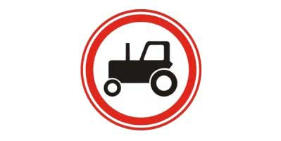
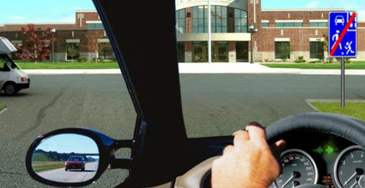
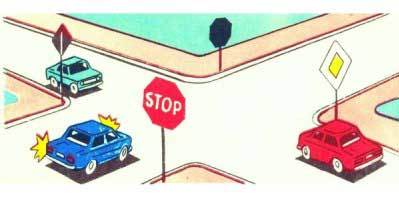
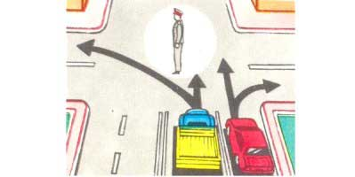
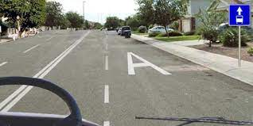
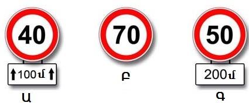
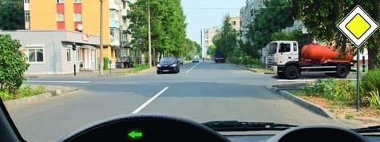
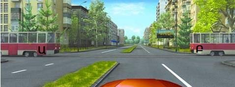
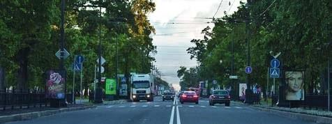

Թեստ 6
30:00
1. "Ճանապարհային երթևեկության անվտանգության ապահովման մասին" ՀՀ օրենքի համաձայն՝ D կարգի և D1 ենթակարգի տրանսպորտային միջոցներ վարելու իրավունքի վկայական կարող է տրվել՝
2. Շրջադարձ է համարվում
3. Տրանսպորտային միջոցների շահագործումն արգելվում է, եթե`
4. Տրանսպորտային միջոցների շահագործումն արգելվում է, եթե՝
5. Երկկողմ երթևեկությամբ գծանշված ճանապարհներին, երեք գոտու առկայության դեպքում (բացառությամբ երթևեկության դարձափոխային կարգավորմամբ ճանապարհների), որոնցից միջինն օգտագործվում է երկու ուղղություններով երթևեկության համար, ձախ եզրային գոտի մուտք գործելը`
6. Այս ճանապարհային նշանը`

7. Տվյալ իրադրությունում պարտավո՞ր է վարորդը ճանապարհը զիջել բեռնատար ավտոմոբիլին:

8. Ցույց տվեք խաչմերուկի անցման հերթականությունը`

9. Այս իրավիճակում զիջել ճանապարհը պարտավոր է՝
10. Հետընթացով մոտենալ ուղևորին այս իրավիճակում
11. Երթևեկությունը թույլատրվում է`

12. Թույլատրվու՞մ է զբոսաշրջային ավտոբուսին երթևեկել A գծանշումով գոտիով:

13. Ի՞նչ առավելագույն արագությամբ է թույլատրվում երթևեկել միջմարզային և միջքաղաքային ուղևորափոխադրումներ իրականացնող ավտոբուսներին` բնակավայրերից դուրս բոլոր ճանապարհներին:
14. Ո՞ր դեպքում է նշանի ազդեցությունն սկսվում անմիջապես տեղակայման վայրից

15. Այս իրավիճակում հետադարձ կատարելիս անհրաժեշտ է ճանապարհը զիջել

16. Ո՞ր տրամվայի վարորդին ենք պարտավոր զիջել ճանապարհը

17. Կանգառն արգելվում է
18. Առաջնահերթ ի՞նչ պետք է ձեռնարկի վարորդը հանդիպակաց երթևեկող տրանսպորտային միջոցի լապտերների լույսից շլանալու դեպքում:
19. Քանի՞ երթևեկության գոտի ունի այս ճանապարհը
